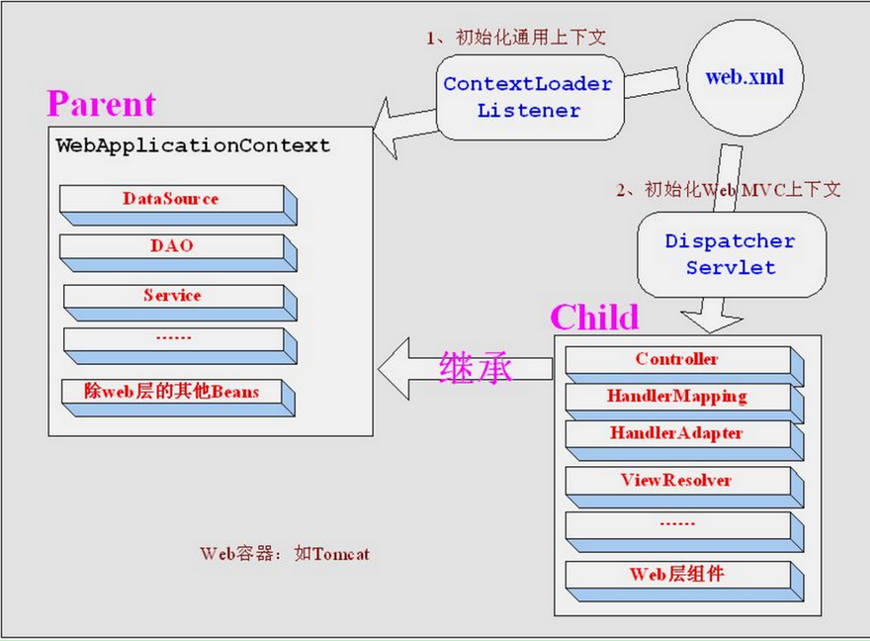
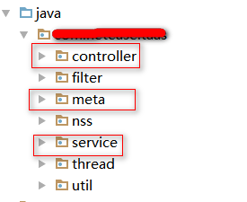
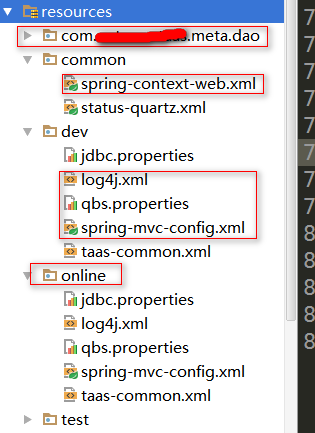
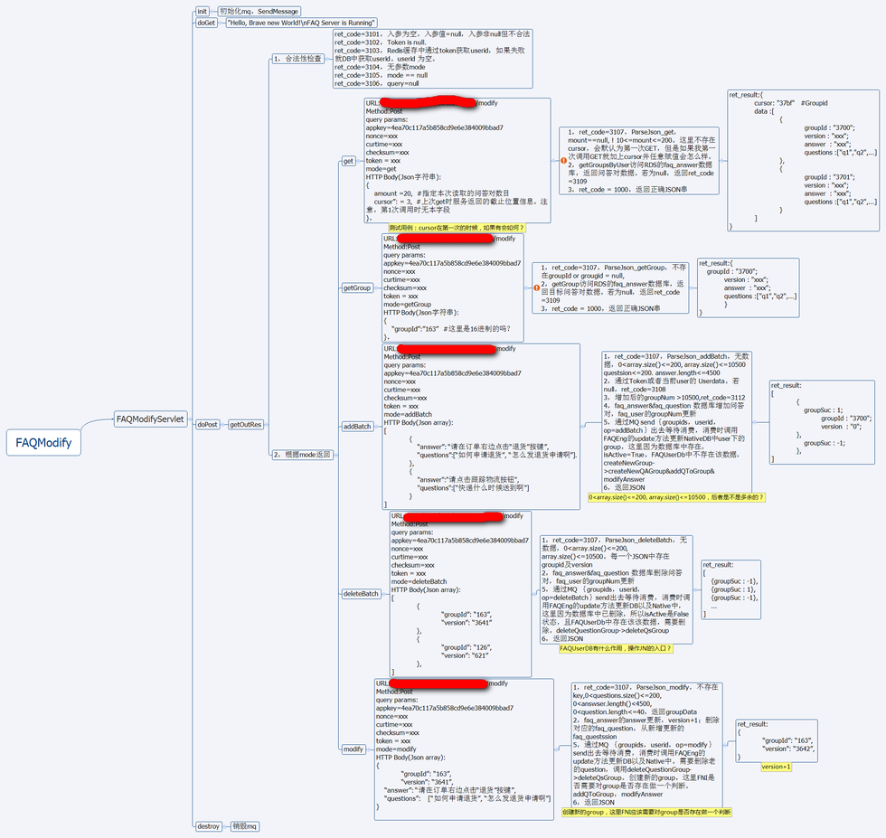

如果想钓鱼，那么就像想鱼一样思考。那么问题来了，你有鱼鳍来游泳吗？
首先，产品的快速迭代，可以迅速满足用户需求，然而却也有一些后遗症，比如部分需求描述偏向于口头传述，文档后于实现，会给QA工作造成比较大的困难。所以在坚守一些固有可靠的测试流程之外，我们需要想一些新的办法。其次，测试的起点是明确测试的需求，然而有些很具体的问题，需要帮助开发定位问题，需求只定义了一些比较粗的业务目标，然而具体实现由开发掌握。那么这里的衔接过程，QA是袖手旁观呢，还是参与其中。个人认为后者可能可以更深入的接近实现，达到最大化的质量保障。 那么从阅读业务实现框架开始吧。
鉴于目前接触到的大多PC端的项目，大多是war包形式走的tomcat。所以这篇文章主要是面向这类产品的一些阅读方法和技巧总结进行的一些实践活动。
源自
- 某运维监控系统Web API Task模块源码阅读
- 某智能语音项目JAVA层源码阅读
Get到那些点
- 一个web项目的容器启动的入口是什么
- 深入Spring MVC + Mybatis的一些成熟的工程架构如何配置
- Spring 和SpringMVC是两件事
QA如何得益于此
- 请跳转至最后 总结
读了那些
一个web项目的容器启动的入口是什么
记得最早的时候开始研究JAVA WEB的时候，记得看到一个人写的一句话：
“初学 Java Web 开发，请远离各种框架，从 Servlet 开发”
Java web开发离不开servlet，servlet的生命周期是有Tomcat/jetty这样的web容器接管，那么web.xml就是所有开始的入口。这里会配置servlet，filter这样的组件。
servlet：通过doGet doPost方法处理请求，这个方法里有传统的两个入参：HttpServletRequest，HttpServletResponse来分别处理请求和响应。
filter：在请求被容器发到servlet之前，会先经过配置的filter。所以一般情况下，filter都是做一些白名单验证，特定的uri要通过openid，doFilter方法在做。
这个时候web.xml里应该会有很多<servlet>和<filter>标签，杂乱无章
加入的springMVC框架后，web.xml就变得简化无比（只是web.xml），需要关注的有下面这些：
|
|
以及servlet的配置：
|
|
又出来了两个配置文件：spring-context-web.xml & spring-mvc-config.xml
一个是通用上下文，一个是初始化ＭＶＣ上下文。如下图

那么各有什么用处：
- ContextLoaderListener初始化的上下文加载的Bean是对于整个应用程序共享的，不管是使用什么表现层技术，一般如DAO层、Service层Bean；
- DispatcherServlet初始化的上下文加载的Bean是只对Spring Web MVC有效的Bean，如Controller、HandlerMapping、HandlerAdapter等等，该初始化上下文应该只加载Web相关组件。
这里就可以大致知道，之前所有<servlet>需要做的事情，都被spring的Dispatcher servlet统一接管，可以理解为一个虚拟的路由器，将请求转发给所有的@Controller
这里碰见过一个事情：我有个外部的服务需要初始化，初始化如下：
|
|
我用它的地方是在一个controller里面，然而放在spring-mvc-config.xml就编译失败，说找不到这个bean。放在spring-context-web.xml就可以。这里就延伸出来另外一个话题 spring和springMVC是两件事。
深入理解Spring MVC + Mybatis的一些成熟的工程架构如何配置
你的项目目录应该是这样的：
/main/：
Controller层，Service层及DAO层，以及filter：
/Resources：
使用MyBatis的话，这些mapper文件放在这里，并使用和DAO层一样的package。
然后根据不同的开发，测试，线上环境放入不同的配置文件。

至于配置文件如何读取，一方面Maven编译打包的时候resource目录下的文件都会copy出来。另外一方面，区分环境变量，在pom,xml的<profile>配置即可，然后通过mvn的 -P参数来区分（这里在OMAD里，其实是通过ant copy覆盖的操作来进行），如图：
|
|
- 请求如何到达Controller
这里有个关键注释：<mvc:annotation-driven/>
因为之前肯定是通过<context:component-scan/>扫描过所有的Controller，但是他们只是bean被构造，需要通过<mvc:annotation-driven/>标签告诉springMVC，请求的处理者。
出处：spring-mvc-difference-between-contextcomponent-scan-and-annotation-driven
- 请求返回：FTL返回及JSON返回
这里要在spring_mvc_config.xml中配置一个bean：ContentNegotiatingViewResolver，有两个属性：
|
|
这两个resolver的好处在于：Controller的函数处理，返回String就默认是FTL的路径（也就是前端的路径），返回void，就是json。不需要@RequestBody注解。
- Controller 怎么看，怎么写
了解一些关键注释的意思，比如@RequestMapping， @RequestParam, @RequestHeader ，@PathVariable， 至于ResponseBody，经过上面的讲解，应该就不需用了。别的话，多看代码，多实践，不缺这样的资料。
- 前端的配置
两个关键配置：
|
|
因为Servlet被Spring整体接管之后，所有的请求都被接管。那么静态文件呢？他们又没有Controller的处理，肯定会404 not found。
- 第一个注释就是解决了这个问题，配置了静态文件的本地路径
/views/，这里根目录是webapp， 那么所有的CSS,JS, PNG, 都将在来这里找。 - 第二个注释其实就是配置frerMarker的模版路径，一般工程也都放在webapp的
/views/下。
spring和springMVC是两件事。
这里碰见过一个事情：我有个外部的服务需要初始化，初始化如下：
|
|
我用它的地方是在一个controller里面，然而放在spring-mvc-config.xml就编译失败，说找不到这个bean。具体为啥，可以参考上一节。因为这些bean并不是有Spring MVC通过@Service标签来统一注入管理。那么它的初始化过程应该要放入spring-context-web.xml，在spring mvc介入之间就需要实例化。否则当然只是一个接口。
得到什么
- 在我新take的一个某智能语音机器人项目中，在没有任何需求设计接口文档的情况下，要开展测试工作，只能先从源码开始，之前的经验帮助了我，理清楚了所有接口的处理逻辑（毕竟是半路接手项目，只能先解决问题为先）。基本上一两天功夫就可以把源码读懂。当时的几个思维导图之一如下：

后面就是欢快的写接口用例case了。
- 略深入理解spring及springMVC
- 找到快速融入团队的切入点。
- 能够迅速定位问题。
- QA不仅仅要整体业务上有宏观把控。出现微观上bug，也能做出root cause的前瞻分析。
结语
白盒与黑盒不是测试手段，而是测试思维。
过度关注开发细节的白盒测试没有意义，从需求出发更加的符合实际中的测试。
引自 链接
业务理解第一，业务理解第一，业务理解第一。